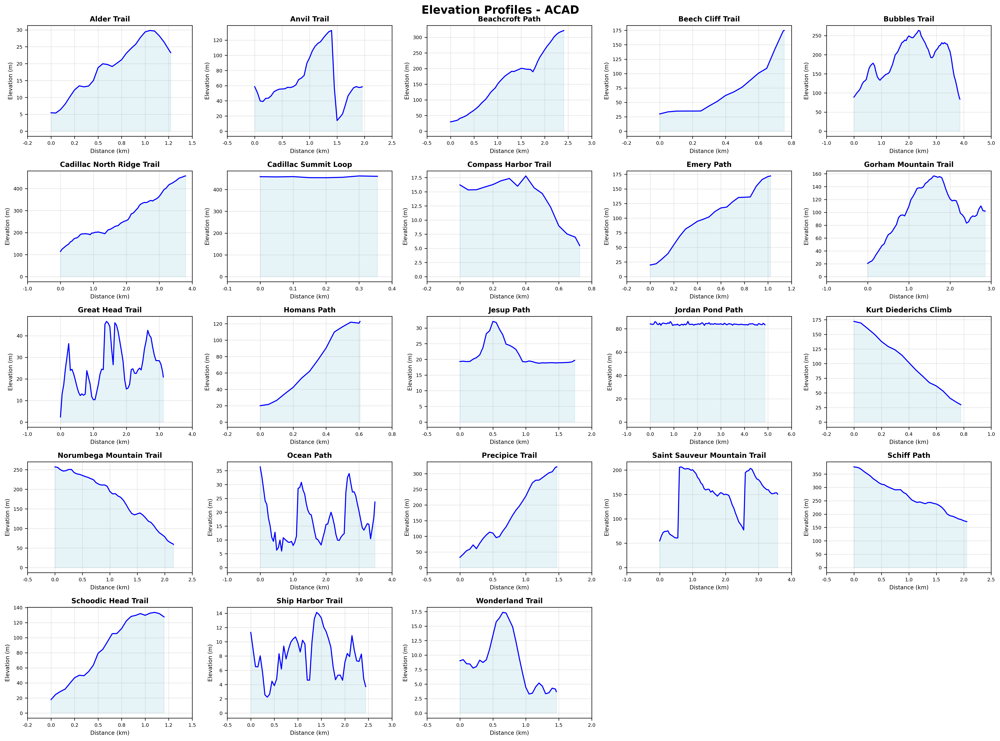
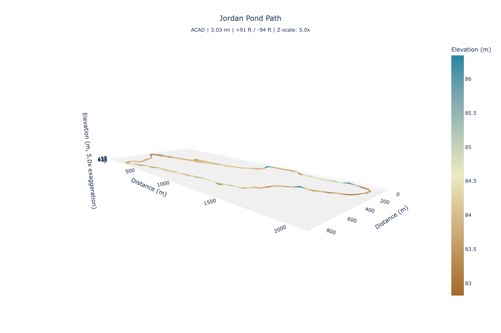

Using the API
This tutorial walks through the API's capabilities, starting with a broad overview of your parks and progressively narrowing down to individual trail visualizations. By the end, you'll know how to query parks and trails, generate visualizations, and build a 3D elevation profile for a specific trail.
The tutorial assumes you've completed the Getting Started guide, run the full data collection pipeline, and have both Docker services running.
The examples below use curl with python3 -m json.tool for pretty-printed output. You can also paste the URLs directly into your browser, which is especially useful for the visualization endpoints that return images and interactive HTML.
Tip: Don't want to set up locally? You can try the data query endpoints on the live demo. In the examples below, replace
http://localhost:8000withhttps://seanangio-nps-hikes.onrender.com. Note that visualization endpoints (maps, elevation charts, etc.) are only available locally.
Orient yourself
First, confirm that the API is running and that the database is connected:
curl http://localhost:8000/health | python3 -m json.tool
You should see:
{
"status": "healthy",
"database": "connected"
}
The root endpoint lists all available endpoints:
curl http://localhost:8000/ | python3 -m json.tool
{
"name": "NPS Trails API",
"version": "1.0.0",
"description": "Query National Park trail data from OpenStreetMap and The National Map",
"documentation": {
"swagger_ui": "/docs",
"redoc": "/redoc",
"openapi_json": "/openapi.json"
},
"endpoints": {
"parks": "/parks",
"trails": "/trails",
"us_static_park_map": "/parks/viz/us-static-park-map",
"us_interactive_park_map": "/parks/viz/us-interactive-park-map",
"static_map": "/parks/{park_code}/viz/static-map",
"elevation_matrix": "/parks/{park_code}/viz/elevation-matrix",
"trail_3d_viz": "/parks/{park_code}/trails/{trail_slug}/viz/3d",
"health_check": "/health"
}
}
Tip: For a full interactive reference, open http://localhost:8000/docs in your browser. The Swagger UI lets you try every endpoint, inspect request/response schemas, and experiment with query parameters.
Browse your parks
The /parks endpoint returns a park_count, a visited_count, and a parks array. Each park includes its 4-letter code, name, state, coordinates, and NPS URL.
curl http://localhost:8000/parks | python3 -m json.tool
To see only the parks from your visit log, add the visited filter:
curl "http://localhost:8000/parks?visited=true" | python3 -m json.tool
{
"park_count": 3,
"visited_count": 3,
"parks": [
{
"park_code": "acad",
"park_name": "Acadia National Park",
"full_name": "Acadia National Park",
"designation": "National Park",
"states": "ME",
"latitude": 44.3386,
"longitude": -68.2733,
"url": "https://www.nps.gov/acad/index.htm",
"visit_month": "Oct",
"visit_year": 2024
},
...
]
}
Visited parks include visit_month and visit_year from your visit log. Flip the filter to see your park bucket list:
curl "http://localhost:8000/parks?visited=false" | python3 -m json.tool
For richer responses, add include_description=true to include the full NPS description for each park:
curl "http://localhost:8000/parks?visited=true&include_description=true" | python3 -m json.tool
See the big picture
The API can serve map visualizations of all your parks. These endpoints return pre-generated images, so you need to generate them first. Run the US park map profiling module:
POSTGRES_HOST=localhost POSTGRES_PORT=5433 python profiling/orchestrator.py us_park_map
Now open the static map in your browser:
http://localhost:8000/parks/viz/us-static-park-map
This returns a PNG image showing all national parks on a US map with Alaska and Hawaii insets. Parks are color-coded by your visit log.

For an interactive version with hover tooltips and park boundaries, open:
http://localhost:8000/parks/viz/us-interactive-park-map
This returns an HTML page with a zoomable Plotly map. Hover over any park to see its name, state, and visit status. You can zoom in to see (rough) park boundary outlines.
Park-level visualizations
The API also serves per-park trail maps and elevation charts. Generate them with:
POSTGRES_HOST=localhost POSTGRES_PORT=5433 python profiling/orchestrator.py visualization usgs_elevation_viz
Note: The
visualizationmodule generates static trail maps for every park with trail data. Theusgs_elevation_vizmodule generates elevation matrices for parks with elevation data. Depending on how many parks have data, this may take a few minutes.
Static trail map
Open a trail map for a specific park using its 4-letter code:
http://localhost:8000/parks/acad/viz/static-map
This returns a PNG image showing the park boundary and all collected trails. Trails are color-coded by data source: blue for OpenStreetMap, orange for The National Map. Purple points mark hiking locations imported from your KML files.

Tip: Replace
acadwith any park code to see its trail map (for example,/parks/yose/viz/static-mapfor Yosemite).
Elevation matrix
For parks where you have matched trails with elevation data, there's an elevation profile matrix:
http://localhost:8000/parks/acad/viz/elevation-matrix
This returns a PNG grid of elevation charts, one per matched trail. Each chart shows distance on the x-axis and elevation on the y-axis, giving you a quick visual comparison across trails.

Explore trails
The /trails endpoint returns trail data from both The National Map (TNM) and OpenStreetMap (OSM). Start by querying trails for a specific park:
curl "http://localhost:8000/trails?park_code=acad" | python3 -m json.tool
The response includes a trail_count, total_miles, and a trails array. Each trail includes:
| Field | Description |
|---|---|
trail_id |
Unique identifier (from TNM or OSM) |
trail_name |
Trail name |
source |
Data source (TNM or OSM) |
length_miles |
Trail length in miles |
hiked |
Whether you've hiked this trail (matched from your KML files) |
viz_3d_available |
Whether a 3D visualization can be generated |
viz_3d_slug |
URL slug for the 3D endpoint (if available) |
When querying a single park, results are sorted by length (longest first). When querying across multiple parks, results are sorted by park code and trail name.
Note: The API deduplicates trails that appear in both data sources. When a TNM trail and an OSM trail in the same park share more than 70% name similarity, the API keeps the TNM version. This avoids double-counting while preferring the more detailed TNM data.
Filter by data source
Compare what each data source provides:
curl "http://localhost:8000/trails?park_code=acad&source=TNM" | python3 -m json.tool
curl "http://localhost:8000/trails?park_code=acad&source=OSM" | python3 -m json.tool
Filter by hiked status
See which trails you've hiked based on your KML data:
curl "http://localhost:8000/trails?hiked=true" | python3 -m json.tool
Or find trails you haven't hiked yet in a specific park:
curl "http://localhost:8000/trails?park_code=acad&hiked=false" | python3 -m json.tool
Filter by length
Find trails within a specific length range:
curl "http://localhost:8000/trails?min_length=5&max_length=15" | python3 -m json.tool
Filter by state
Query trails across all parks in a state:
curl "http://localhost:8000/trails?state=CA" | python3 -m json.tool
You can combine multiple states by repeating the parameter:
curl "http://localhost:8000/trails?state=CA&state=UT" | python3 -m json.tool
Note: State parameters surface state data as returned from the NPS API, rather than geographic validation. Keep this in mind when querying trails in parks that span multiple states (Yellowstone for example).
The 3D trail journey
The most detailed visualization in the API is an interactive 3D elevation profile for individual trails. Getting there takes a few steps because you need to discover which trails have elevation data and find their URL slugs.
Find trails with 3D data
Start by filtering for trails with 3D visualizations available:
curl "http://localhost:8000/trails?park_code=acad&viz_3d=true" | python3 -m json.tool
In the response, look for the viz_3d_slug field on each trail:
{
"trail_count": 2,
"total_miles": 5.8,
"trails": [
{
"trail_id": "123456",
"trail_name": "Jordan Pond Path",
"park_code": "acad",
"source": "TNM",
"length_miles": 3.4,
"hiked": true,
"viz_3d_available": true,
"viz_3d_slug": "jordan_pond_path"
},
...
]
}
The viz_3d_slug value is what you need for the next step.
Open the 3D visualization
Build the URL using the park code and trail slug, and open it in your browser:
http://localhost:8000/parks/acad/trails/jordan_pond_path/viz/3d
This opens an interactive 3D Plotly visualization. You can rotate, zoom, and pan the trail. The trail is color-coded by elevation using a terrain gradient (brown at lower elevations, cream in the middle, and blue-green at higher elevations). Hover over any point to see its distance along the trail and elevation.

Adjust the vertical scale
By default, the z-axis is exaggerated by a factor of 5 to make elevation changes more visible. You can adjust this with the z_scale parameter (range: 1 to 20):
http://localhost:8000/parks/acad/trails/jordan_pond_path/viz/3d?z_scale=10
A higher value makes elevation changes more dramatic. A value of 1 shows true proportions, which can make trails appear nearly flat.
What makes a trail eligible
Not every trail has a 3D visualization. A trail needs elevation data, which requires this chain:
- You added a hiking point near the trail in your KML files.
- The trail matching step matched that point to a trail geometry.
- The elevation collection step sampled points along the trail and queried the USGS for elevations.
This is why your KML files matter. They determine which trails get elevation data and 3D visualizations.
Note: Unlike the park maps and elevation matrices from the previous sections, 3D trail visualizations don't require the profiling step. The API generates them on-demand from the elevation data already in the database.
Combine and discover
All the filters on the /trails endpoint can be combined. Here are a few queries that answer real questions:
What long trails haven't I hiked in Utah?
curl "http://localhost:8000/trails?state=UT&hiked=false&min_length=5" | python3 -m json.tool
Which of my hiked trails have 3D visualizations?
curl "http://localhost:8000/trails?hiked=true&viz_3d=true" | python3 -m json.tool
From there, pick any trail with a viz_3d_slug and open its 3D visualization in your browser.
Tip: You can also use Python's
requestslibrary, the Swagger UI at/docs, or any HTTP client to query these endpoints.